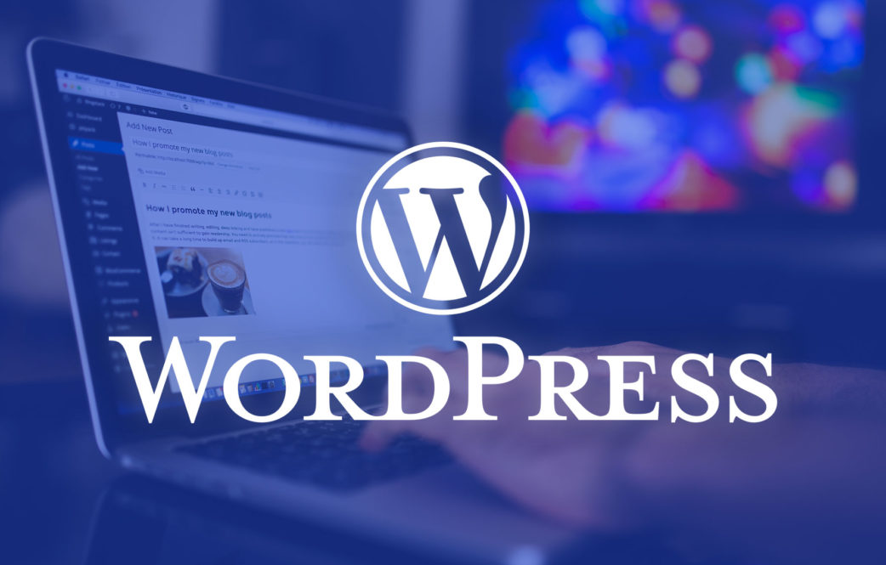

O que é WordPress, para que serve e principais segredos desvendados

O que é e para que serve?
O WordPress é, basicamente, um CMS (Content Management System), que em português significa Sistema de Gerenciamento de Conteúdo.
Em outras palavras, é um sistema usado para administrar sites, blogs, lojas virtuais, portais de notícia, áreas de membros e outros tipos de página. Seu objetivo é facilitar a criação e administração não somente de blogs e sites, mas também de lojas virtuais e várias outras aplicações web.
Como o próprio nome já diz, o objetivo do CMS é gerenciar o conteúdo de forma simples e prática.
De forma mais específica, ele tem como missão facilitar a criação e a edição de conteúdos em um site sem a necessidade de usar uma linguagem de programação. A ideia é tornar possível que até um produtor de conteúdo sem conhecimento algum em códigos consiga, de forma simples e intuitiva, gerenciar todo o seu portal, loja ou blog.
Adicionar, programar e editar posts para o site ou blog como se estivesse escrevendo no Word, por exemplo;
Inserir e editar arquivos de mídia, como imagens, vídeos e áudios;
Criar novas páginas, menus, categorias e tags para o site;
A origem de tudo
O WordPress começa a partir da interrupção de um projeto chamado B2 Cafelog, que era uma plataforma para desenvolvimento de blogs.
Esse projeto se iniciou em 2001 e foi abandonado em 2003, mais precisamente no dia 27 de maio, quando começou o WordPress (na versão 0.7).